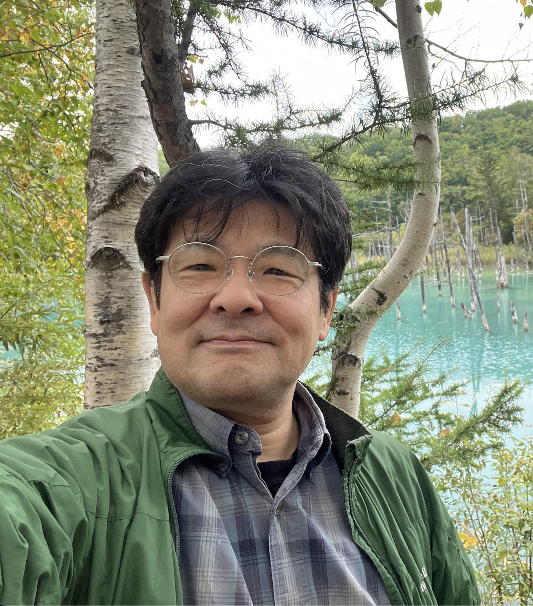

「何のために科学や自然を学ぶのか」、そしてそのために「どんなことをどういう方法で学ぶのか」を考える時間が不足していないでしょうか。何かを実行するときに、あるいは何が適切かを判断するには目的がしっかりしていなければなりません。環境問題の教育に関しては、教える側の科学的自然観がその目的に関する重要なよりどころのひとつになります。そうした科学的自然観からみた環境問題の意義と興味深さを、環境教育・保健科教育・災害教育・情報教育・総合的な学習の時間などとの関連も含めて取り扱いたいと思っています。
また、過去の多くの人々が、今よりずっと自然豊かな環境で育ち、環境問題に関する知識もなかったわけではないのに今日のような危機的状況が生まれてしまったことは、「人は論理や倫理だけでは動かない」ということを示していると思います。したがって、持続可能な未来を作る仲間を増やすためには、法則性や関係性に関する知識だけでなく、自然に関する感性的理解や共感が生まれるような、単なる自然体験だけではない教育が必要だと考えられます。
私たちは、そういった視座から「人と自然をつなぐための実践的環境教育」を考えていきたいと思っています。
自然体験により身近な自然を実感することで環境意識を高め、環境行動を実践する人材の育成
地球規模の時間的・空間的意識を持ち、過去・現在・未来の推移の中で人と自然の関係性を踏まえた環境問題への対処法を構築できる人材の育成
地域の自然の特性を踏まえた防災・減災教育のプランニング
体験的環境教育の指導法の講習による指導者養成
生物多様性教育に関するサポート
環境教育・減災教育などに関する課題に対応するための教育活動（幼児〜成人）やリスクマネジメントのためのマニュアル作り・効果検証をサポートします。身近な自然をどう教育に活用するか、地域の自然の特性と環境問題・自然災害との関係などについて、野外での自然体験を中心に展開する方法を検討します。また、生物多様性保全に関する現代的な課題について行われている実践に対して、学術的視座からの展望や効果検証などを行います。

環境教育・減災教育・生物多様性・自然体験プログラムの開発・評価に関するご相談を承っています。